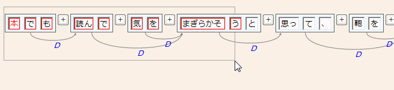
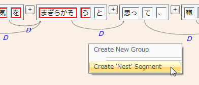
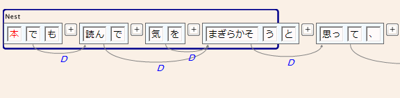
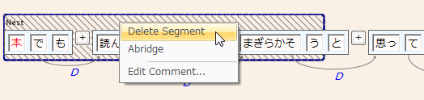
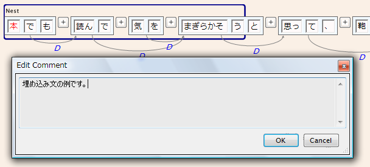
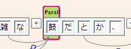
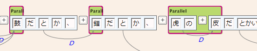
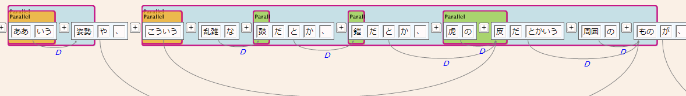

ここでは、Dependencyパネルを用いて文に対していくつかの一般的なアノテーションを付与する方法について述べます。
埋め込み(Nest)アノテーション
Nestアノテーションは、埋め込み文、引用、注釈などの部分に付与するもので、文節と同じくSegment型のタグの一種です。
例として、「～と思って、」のような文の「～」の部分をNest Segmentにしてみます。Boxや線にヒットしない場所で例文の「本」の位置から「まぎらかそ/う」の位置までをマウス左ボタンドラッグにより囲みます。囲まれた部分の語Boxが赤枠により選択状態に変わります。

ドラッグを終えると、次のようなメニューがポップアップしますので、"Create 'Nest' Segment"を選択します。これで選択範囲にNest Segmentが付与されます。

Nest Segmentができると、その部分にはSegmentを示す青色の矩形が表示されるようになります。これがSegmentのアノテーションです（枠の色はSegmentのTagの種類によって変わります）。

付与したアノテーションは文節・係り受け編集と同じくUndo/Redoの対象になります。Save操作を行うことでDBに反映されます。
作成したアノテーションは、範囲内でマウス右クリックして選択状態（下図）にした上で、コンテクストメニューから"Delete Segment"をクリックすれば削除できます。

アノテーションの縮退表示
削除の場合と同様にSegmentを選択して、メニューから"Abridge"をクリックすると、そのSegmentの範囲が縮退表示されます。これは、長いNest Segmentなどを短く見せて、文全体の構造を把握しやすくするために提供される機能です。表示上だけの一時的な形態ですので、セーブはされません。また、縮退した部分には、緑色のボタンが代わりに置かれます（ボタンの上にマウスを持っていくと省略された部分のテキストをToolTipとして見ることができます）。このボタンをクリックすると非縮退状態に戻ります。

アノテーションへのコメント付与
削除の場合と同様にSegmentを選択して、メニューから"Edit Comment..."をクリックすると、コメントを入力するための下図のようなダイアログが表示されます。ここにコメントを入力して"OK"を押すとSegmentに対してコメントが付与されます。

同格・並列アノテーション
次は、同格(Apposition)・並列(Parallel)のアノテーションを行う方法を示します。これらは単純なSegmentではなく、Segmentと同時にGroupも生成される点が Nest Segment と異なります。アノテーションは２段階で行われます。
- 範囲を選択してSegmentを作成し、同時にそのSegmentを最初の要素とするGroupを作成する。
- 範囲を選択してSegmentを作成し、同時にそのSegmentを既存のGroupに追加する。
手順2は繰り返し行うことができます。
具体例として、「ああいう姿勢や、こういう乱雑な鼓だとか、鎧だとか、虎の皮だとかいう周囲のものが」という部分に対して並列アノテーションを付与することを考えます。
まず、「鼓」という部分を Nest Segment のときと同様に選択して、メニューから"Create New Group"をクリックします。これにより新しい、Apposition Segment とそれを含む Apposition Group が生成されます。Apposition Segmentは緑色の矩形で示され、Groupはその内部を既定色で塗り潰すことで示されます（同じGroupは同じ塗り潰し色となります）。作成したいのはParallelなので、そのSegment上でコンテクストメニューを表示させ、"Change to Parallel"をクリックして、Parallel Segment / Group に変更します。（このあたりの操作法は変更される可能性があります。）

次に、「鎧」の部分を選択して、メニューから"Add to Group-1"をクリックします。これにより新しい Parallel Segment が作成され、第1番に作成されたGroup、つまり「鼓」と同じ Parallel Group に追加されます。
同様にして、「虎の皮」の部分も同じGroupに追加します。これで３つのSegmentが同じ並列句としてマークされたことになります。

Segment単位の削除、コメントの付加は、Nestの場合と同様に行うことができます。Abridgeは、Groupのカバーする範囲全体の縮退表示となります。
同様に複数のGroupを生成した結果としてできる、この部分の最終的なアノテーションを下図に示します。ここにあるように、Segment同士は範囲の重複や包含があっても構いません。

注意点
- これら一般的なアノテーションは、Document内の文字位置に対して付与されるため、文節の切断・結合と無関係に文字に追随する形で保持されます。
- Segment矩形は、範囲に含まれる単語Boxをすべて包含する矩形として計算されるため、Diagonal表示を選択している場合には必ずしも終端文字の所で終わっているとは限りません。（文節単位でSegmentを作成した場合はこの問題はありません。）
- これらのアノテーションはCabocha形式では表現できませんので、Cabochaエクスポート時には独自の拡張形式で出力されます。
カスタムGroup
標準で定義される"Parallel", "Apposition"以外に、TagSetDefinitionEditor により任意のGroupタグを定義・付加することができます。 その際、Groupタグの名称と同じ名前のSegmentを一緒に定義しなければなりません。（例えば、"Custom"というGroupタグ定義を追加したら、"Custom"という名前のSegmentタグ定義も追加する。）このため、既にSegmentタグ名として使われている名称をGroupの名称に使用することはできません。